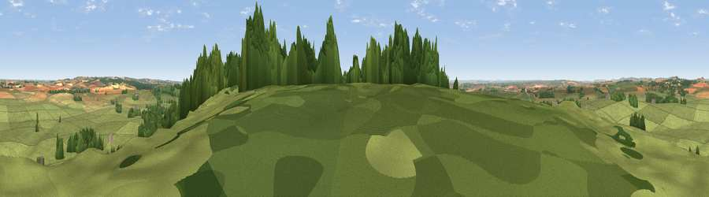

Viewpoint near Tidworth
#11662 in England · top 14% of its area beats it · near TidworthWhere it is
The exact computed spot (SU 21625 50675). Click the marker for map links.
The view, rendered

A 360° render of this exact spot computed from the terrain model, tree cover and land cover — summer colours, afternoon light, calibrated against photographs of famous viewpoints. Real trees, hedges and buildings will differ in detail.
The panorama
Grey silhouette: terrain skyline in each direction (720 bearings, Earth curvature and refraction included). Dashed green: skyline with trees (+15 m) and buildings (+8 m) as obstacles. Blue strip: how far the ground is visible on each bearing.
Where the view opens
Wedge length = distance to the farthest visible ground on that bearing (vegetation-aware). Rings at 10, 25 and 50 km.
What fills the view
73% grassland · 15% cropland · 11% woodland ·
Angular shares of the visible panorama (visual magnitude), not map area. Landscape diversity 0.34 (0–1 Shannon).
Key numbers
More beautiful places nearby
The staircase of upgrades: each row has a higher view potential than everything closer. Driving times are estimates from straight-line distance, calibrated against real road routing — check an actual route before setting out.
| Place | Direction | Drive | Score |
|---|---|---|---|
| Viewpoint near Cholderton | SSW · 7 km | ~15 min | 61.6 |
| Milton Hill | NNW · 8 km | ~16 min | 62.3 |
| Viewpoint near Bulford | SSW · 8 km | ~16 min | 70.3 |
| Viewpoint near Oare | NNW · 14 km | ~25 min | 72.9 |
| Martinsell viewpoint | NNW · 14 km | ~25 min | 77.3 |
| Viewpoint near Berwick St John | SW · 42 km | ~61 min | 78.2 |
| Viewpoint near Buriton | ESE · 59 km | ~81 min | 80.0 |
| Tennyson Down | S · 66 km | ~89 min | 83.2 |
51.25483, -1.69151 · source: screening · position refined by local search. Computed location — check access rights before visiting.